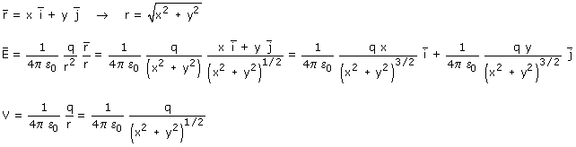
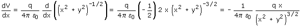
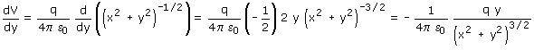

Calculamos campo y potencial que crea en un punto (x, y) una carga q situada en el origen  Derivamos el potencial respecto a x (y se considera constante):  La derivada del potencial respecto a x cambiada de signo, es EX Derivamos el potencial respecto a y (x se considera constante):  La derivada del potencial respecto a y cambiada de signo, es EX |